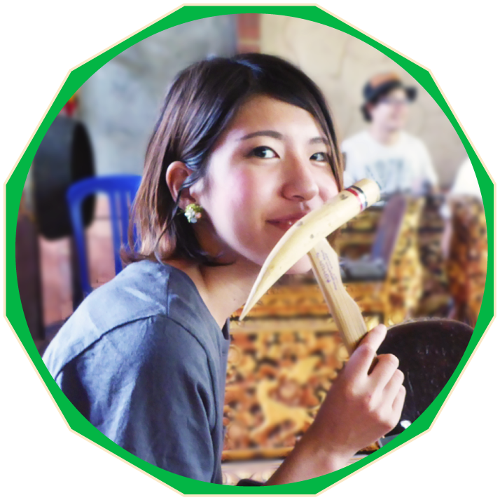
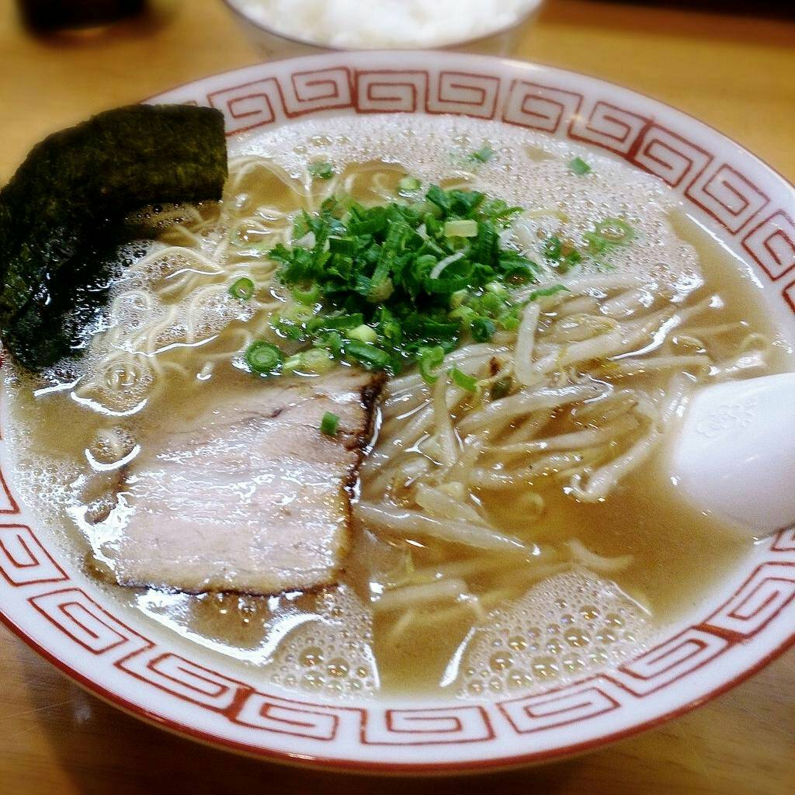
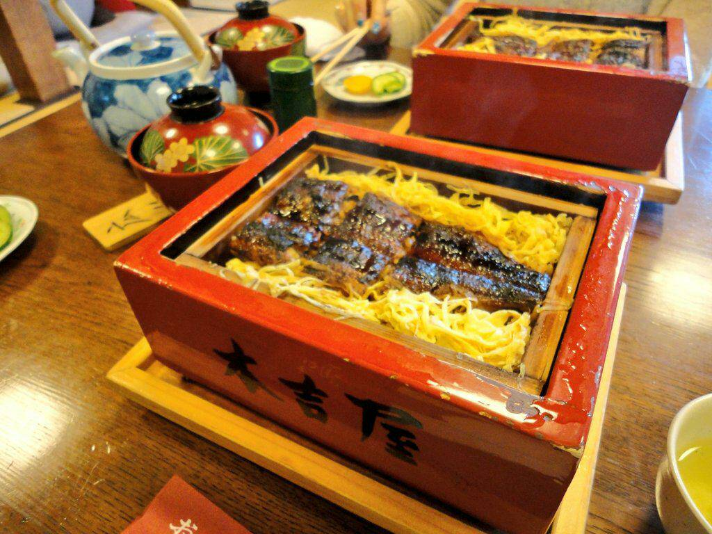
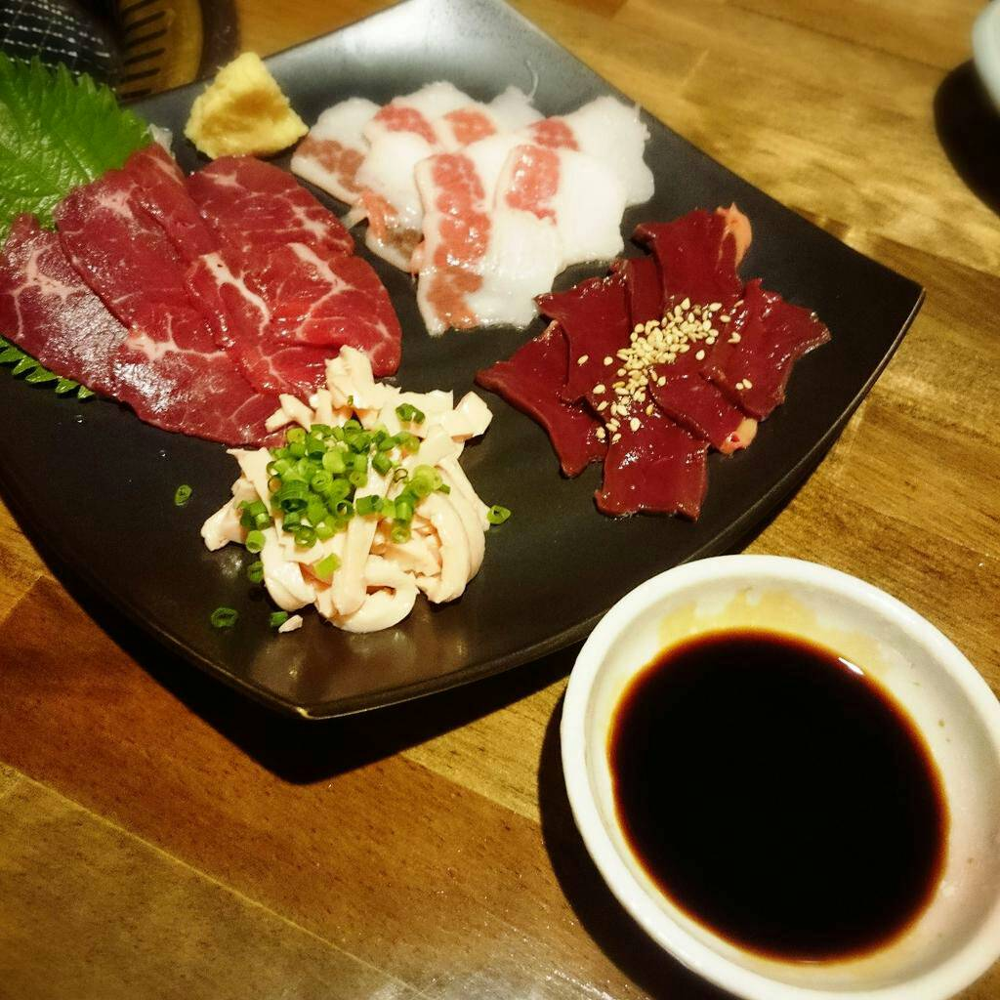

北海道江別市出身。
九州大学 芸術工学部 芸術情報設計学科 卒業。
コンテンツデザイン専攻。
グラフィック、Webアプリケーション、スマホアプリなど、幅広い分野での制作・開発に携わる。
社会人１・２年目では営業としてダイレクトマーケティング・Webマーケティングのディレクション・実制作を担当。
▶ソフト
▶言語
NEW! Swift2.0
フォトショップとイラストレーターは
新聞社スポーツ新聞部にて
２年間の実務経験あり。">
新聞社スポーツ新聞部にて
２年間の実務経験あり。">
▶言語
NEW! Swift2.0
▶食べ歩き
北海道もそうですが九州はおいしいものがたくさん！
各県に飛び、グルメを楽しむのが大好きです。
実家で15年間、猫を飼っていました。
ついだらけてしまうのを許してくれるような、猫の存在感が大好きです。
一時期実家では、捨て猫を拾っては里親探しをするなど、最大１０匹以上の猫がいたことも。
▶ものづくり
動くものを作りたい！と思い、北海道からはるばる九州へ。
独学ばかりでまだまだ力不足感がすごいですが、昔からブログ改造やホームページ制作など、
アイディアを形にするものづくりが大好きです。
北海道もそうですが九州はおいしいものがたくさん！
各県に飛び、グルメを楽しむのが大好きです。
  
▶猫実家で15年間、猫を飼っていました。
ついだらけてしまうのを許してくれるような、猫の存在感が大好きです。
一時期実家では、捨て猫を拾っては里親探しをするなど、最大１０匹以上の猫がいたことも。
▶ものづくり
動くものを作りたい！と思い、北海道からはるばる九州へ。
独学ばかりでまだまだ力不足感がすごいですが、昔からブログ改造やホームページ制作など、
アイディアを形にするものづくりが大好きです。